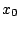
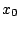
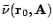

The so-called grade of a
vector  with respect to a nonsingular matrix
is
the dimension of the (largest) Krylov (sub)space generated
by
from
with respect to a nonsingular matrix
is
the dimension of the (largest) Krylov (sub)space generated
by
from  . It determines in particular, how many
iterations a Krylov space method with linearly independent
residuals requires for finding in exact arithmetic the
solution of
(if the initial approximation 
is the zero vector). In this talk we generalize the grade
notion to block Krylov spaces and show that this and other
fundamental properties carry over to block Krylov space
methods for solving linear systems with multiple right-hand
sides.
. It determines in particular, how many
iterations a Krylov space method with linearly independent
residuals requires for finding in exact arithmetic the
solution of
(if the initial approximation 
is the zero vector). In this talk we generalize the grade
notion to block Krylov spaces and show that this and other
fundamental properties carry over to block Krylov space
methods for solving linear systems with multiple right-hand
sides.
We consider  linear systems with the same
nonsingular coefficient matrix
, but different
right-hand sides , which we gather in a
block vector
.
The
linear systems with the same
nonsingular coefficient matrix
, but different
right-hand sides , which we gather in a
block vector
.
The  systems are then written as
systems are then written as
The block grade of with respect to or, the block grade of with respect to is the positive integer defined by
Among the results we have established for the block grade are the following ones.
LEMMA 1 For ,
LEMMA 2 The block grade of the block Krylov space and the grades of the individual Krylov spaces contained in it are related by
LEMMA 3 The block grade  is characterized by
THEOREM Let be the block solution of and let be any initial block approximation of it and the corresponding block residual. Then
We also discuss the effects of the size of the block grade on the efficiency of a block Krylov space method.